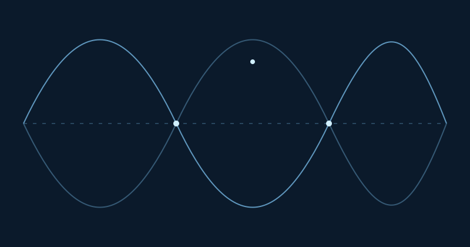
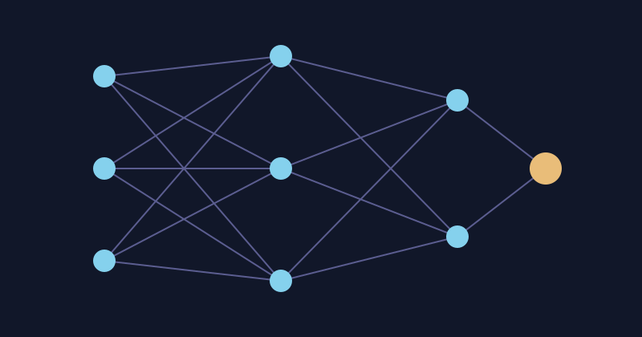
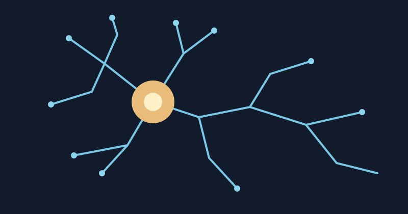

Research interests
Research
Four connected directions, from mathematical descriptions of physical systems to learning and neuronal computation.

Mathematical & Theoretical Physics
Quantum mechanics, operators, symmetry, and mathematical methods.
Open theme →
Statistical Physics & Emergence
Stochastic systems, collective behaviour, and universality.
Open theme →
Machine Learning & Learning Theory
Probabilistic models, optimization, sequence learning, and RL.
Open theme →
Neurophysiology & Computation
Neuronal dynamics, circuits, synchronization, and computation.
Open theme →